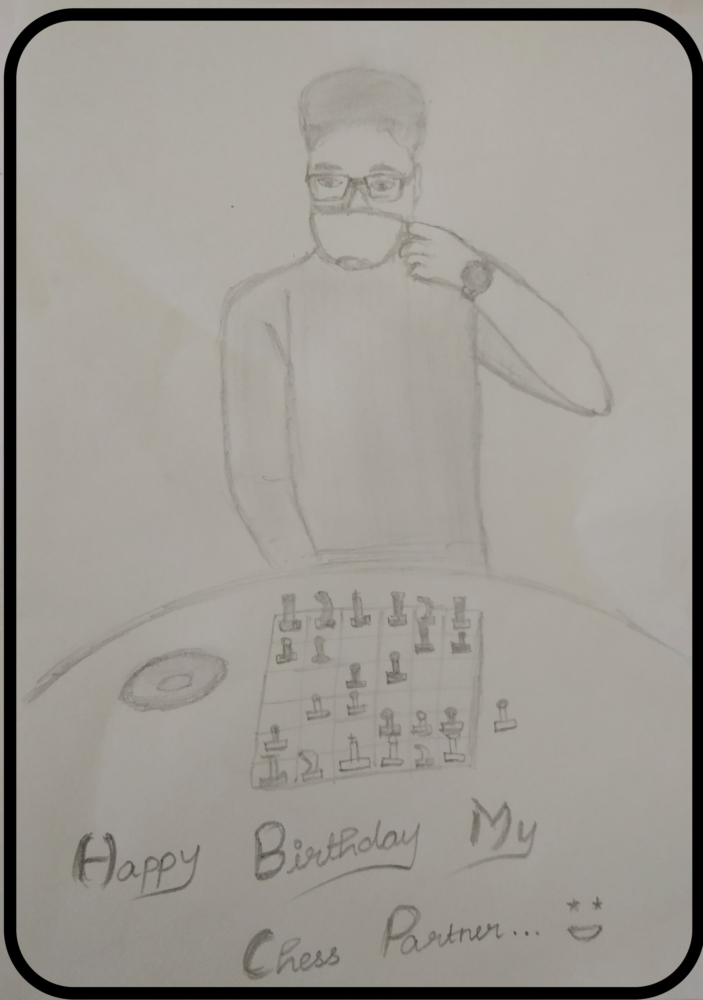

A picture is worth with a thousand words,
but the memories are priceless! ♥
Note: Sorry for drawing and spoiling your good pic! 😂
Hey Sab,
Hope u are doing good. Ok, I don't know where to start with. When I first joined the team, I was a little anxious about the entire workflow! Epdi elam set aagum nu irundhuchu. Though we haven't spoken initially, through meetings I got to know ne oru jovial character. But once kuda na yosichadhu ila, namma ivolo close aavom nu. I still remember, sometimes calls la ne epdi ena target panuva nu 😂. At times, I even predicted, ne my name call panni edhachu kepa nu... You sometimes scared me though. Somehow, I feel lucky that we became friends.
Though I was reluctant initially, you made me comfortable. We haven't met each other (Maybe till you see this!), but within a few days, we started to share our past. You opened up many things, which showed how much trust you have in me. Seriously, your life journey, ne cross panna paths lam tough. Many times it made me feel like we should have met earlier as you say and unoda these tough times la unuku na support panirukanum nu. Anyways, I'm so happy that you faced everything, worked hard and uplifted yourself to this level. To be honest, Your story inspires me a lot and makes me be more close to yew! I love the way how you care and love your mom and family.
Unkuda pesunalae relief uh irukum. You make people around you more comfortable and make them laugh. Don't leave those qualities. Our endless talks, mokka podradhu, kalaikradhu, sirikradhu lam its like moments to cherish for our friendship. Playing Chess with you is always the best part. Continuous uh epdi ne win panra nu therila. Ne avolo strong uh ila na ivolo weak uhh! Whatever it is, I don't care about winning or losing,, all that matter is the fun we have while playing games. Overall uh work panradhu thavara elamae panuvom namma.
I value our bond so much. I can't afford to lose you and I trust you a lot. Feeling so light now. On this special day, I just ask you for one thing. "Keep in touch" forever. Wherever you go, whatever position you are in, 'remember me' and that's all I want from you. Stay blessed and IK your career will be great!. Hope you loved this page! and our five plus months journey splashed I guess. Stay safe and Take care of yourself, your mom and family. Before winding up, take a quick look at this.
Click the link below for a little last surprise!
Bhoooooo
With love,
Your Kedi.